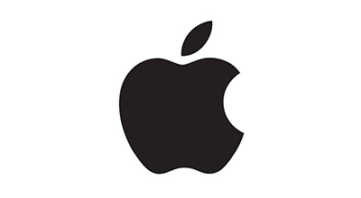
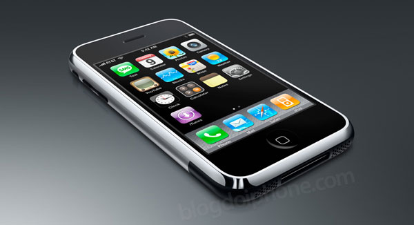

História da criação do IOS
O iOS, sistema operacional móvel da Apple, foi lançado pela primeira vez em 2007, juntamente com o revolucionário iPhone. Sua criação marcou uma nova era na indústria de tecnologia, redefinnindo o conceito de smartphones e a maneira como os usuários interagem com seus dispositivos.
Desenvolvido com base no macOS, o iOS foi otimizado para telas sensíveis ao toque, introduzindo uma experiência de uso intuitiva.
Uma nova interface e interatividade
Um dos grandes diferencias do iOS foi sua interface gráfica, que eliminou a necessidade de teclados físicos e botões adicionais, dando lugar ao uso de gestos na tela. Essa mudança drástica impediu que os usuários navegassem por aplicativos e funcionalidades com toques simples e penetrantes, trazendi um nível de acessibilidade e facilidade de uso que até então não era comum em dispositivos móveis
App Store e o ecossistema de aplicativos
Outro marco importante foi o lançamento da App Store em 2008, um ano após o primeiro iPhone. Essa plataforma ofereceu aos desenvolvedores a oportunidade de criar e distribuir aplicativos diretamente para os usuários. Isso levou ao crescimento exponencial do número de aplicativos disponíveis, oferecendo soluções para diversas necessidades, desde entretenimento e produtividade até saúde e educação. O ecossistemade aplicativos que surgiu a partir disso é um dos fatores mais decisivos para o sucesso do iOS.
Evolução contínua
Desde sua criação, o iOS passou por atualizações anuais, cada uma trazendo novos recursos e melhorias de desempenho. Ao longo dos anos, o sistema incorporou funcionalidades como assistentes de voz (Siri), ferramentas de segurança avançadas (Face ID e Touch ID) e a integração com outros dispositivos do ecossistema Apple, como iPads, Macs e Apple Watches. Hoje, o iOS é um dos sistemas operacionais móveis mais utilizados no mundo, sendo sinônimo de inovação e tecnologia de ponta